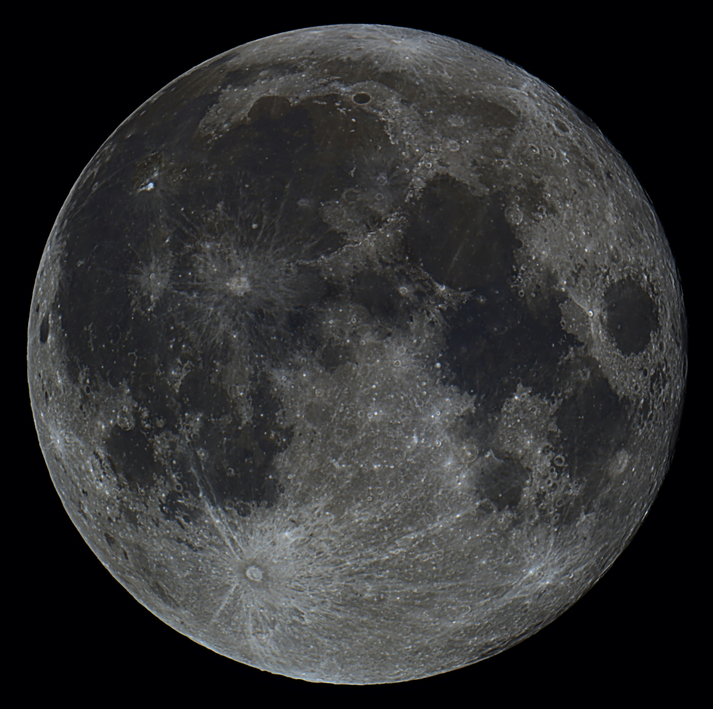

Explorer
Discover the beyond! Let's start with the black hole.
Black holes are places in space with gravity so strong that nothing can escape not even light. They form when huge stars collapse. At the center is something called a singularity, surrounded by the event horizon, the point where nothing comes back. We can’t see black holes directly, but we know they’re there by how they affect nearby stars and light. Some are small, and some are supermassive like the one at the center of our galaxy.
Interesting, right? Let's move on to Andromeda!
Andromeda is the nearest big galaxy to our own, the Milky Way. It's about 2.5 million light-years away and contains over a trillion stars — more than twice as many as the Milky Way! Scientists believe that Andromeda and the Milky Way are slowly moving toward each other and will collide in about 4 billion years, forming a completely new galaxy.

Moving forward to our dear sun.

The Sun is a massive, glowing ball of gas made mostly of hydrogen and helium. It sits at the center of our solar system and provides the light and heat that make life on Earth possible. Even though it’s just an average-sized star, it’s so large that about 1.3 million Earths could fit inside it! The Sun is around 4.6 billion years old and is expected to keep shining for another 5 billion years. It powers itself through nuclear fusion, turning hydrogen into helium deep in its core — a process that releases an incredible amount of energy every second.
Last but not least, our beautiful moon.
The Moon is Earth’s only natural satellite and the fifth largest moon in the solar system. It’s about 384,000 km away from Earth — close enough that it affects our tides through its gravity! The Moon has no atmosphere, no weather, and its surface is covered in craters and dust from billions of years of impacts. Fun fact: the Moon is slowly drifting away from Earth — by about 3.8 centimeters per year!
